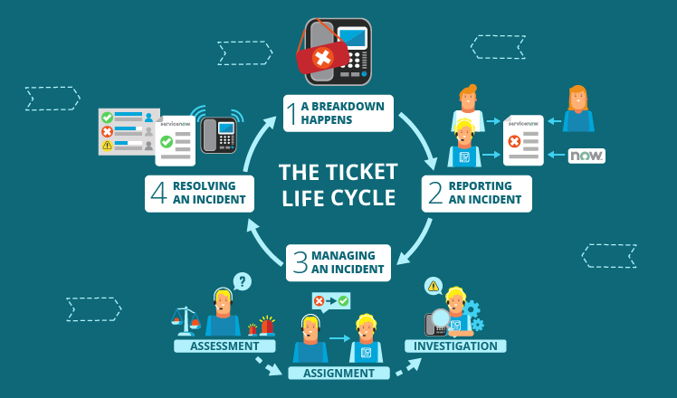

My name is Srisanmathi and I am recent graduate aspiring to be a full stack software developer.
I have portrayed some of my recent works in this website. When I am not working, I spend my time reading
adventurous novels, hitting the gym, playing badminton and exploring different eat-outs. To know more about me,
visit my
LinkedIn
profile.
 February 10, 2020
February 10, 2020
Amazing Places Finder
Amazing places finder is a web application which has the interesting places
around the globe. The source for the data is from users who can add a place along with its rating
and related information. Other users can either view these places by applying various filters or update
its rating. Admin can remove a place if the place is not open anymore. The application has been tested
extensively using mocha testing framework and documented using swagger. The application was hosted on
Digital Ocean droplet with Centos Linux server. Used PM2, a daemon process manager to manage and keep the application online. Nginx was used as a web server to
accelerate content delivery and load balancing.
Tools and technologies used: Angular 8, NodeJS, Express, Mongodb, Swagger, Mocha, Digital Ocean,
PM2, Nginx
April 20, 2020
Cinemax Movie Portal
Cinemax movie portal is a web application which has the repository of popular movies and their related content. Users can
view a list of movies along with the names of the actors in the movie, genre and the year of release. The application has
been tested using Junit testing framework. This application uses relational database since there exists many relationships
between objects like movie, actor, director, crew, producer and so on. The application was hosted on AWS EC2 instance with
Ubuntu Linux server.
Tools and technologies used: React JS, Spring Boot, Spring JPA, Spring MVC, Java 8, MySQL, AWS EC2
May3, 2020
Azure Bing News
Azure Bing news displays a collection of news articles from the sources found on the web. This is a custom API built on top
of Bing News Search API.It provides additional functionalities like providing authentication and authorization to users using
Json Web Token(JWT). This application manages the Microsoft Azure subscription key without the user sending it with every
request. User can access this API to indirectly fetch news articles from Bing. Users can view Trending Headlines,
filter news articles by categeory and a search key.
Tools and technologies used: Microsoft Azure Cognitive Services, NodeJS, Express, JWT Tokens, MongoDB, Markdown
December 4, 2018
Ticketing Tool

Ticketing tool software is a database oriented project which uses MySQL relational database. It was an academic project
done with a team of 4 members using Agile Scrum methodology. The requirements of an IT organisation ticketing system was collected and user stories were
generated. The conceptual design and logical designs were implemented before the implementation of SQL queries. Views, triggers,
events, stored procedures, functions, indices and transactions were implemented.
Tools and technologies used: MySQL, MySQL Work Bench, AWS RDS, NodeJS, Express
November 14, 2019
Mobile email client
Mobile email client is an messaging application for android phones. It can be used to send and receive messages to
the list of registered users in the system. Created a custom API which was hosted in the AWS to manage users
and send emails. While composing a message, sender can select from the list of users. Used recycler view to efficiently
list the messages without over-fetching. Used Shared Preferences to store the auth-token received from the server.
Tools and technologies used: Java, Android Studio, Postman
August28, 2019
Social Media App

The social media application aims to create a platform for people to collaborate with people having
similar interests and communicate their thoughts through the same platform. The application uses Google
Cloud Platform's Firebase to handle backend services. The user has the option to sign in using email and password,
google sign-in and using phone verification. Storage of user data is done using Cloud Firestore. Storage of images
and videos are stored using Firebase storage. The chat information is stored using Firebase Real-time Database.
Tools and technologies used: React Native, Javascript, Android, iOS, Google Cloud Platform Firebase